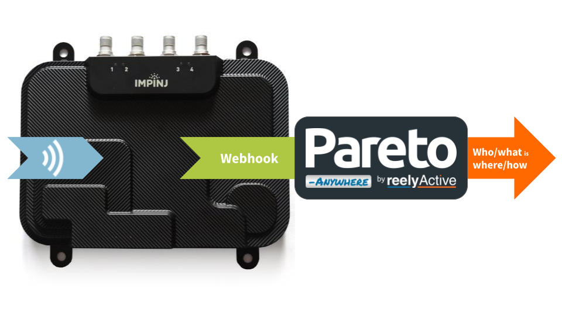
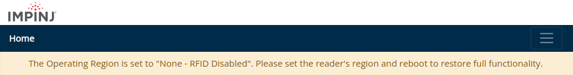
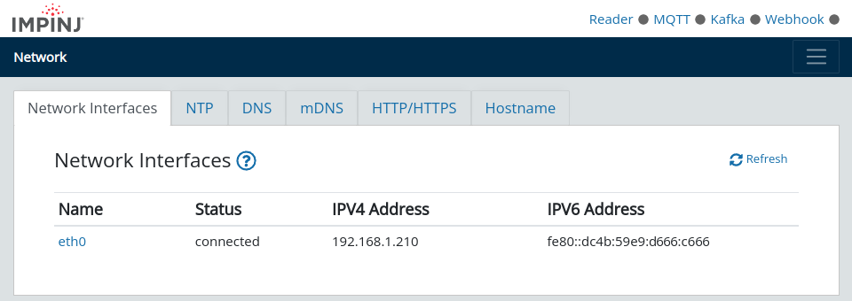

Configure an Impinj R700 Reader
Our step-by-step guide to configure the reader to forward data for processing by Pareto Anywhere.
The TL;DR (Too Long; Didn't Read)
Learn how we at reelyActive configure the readers to make any physical space context-aware
- What will this accomplish?
- The R700 will forward ambient RAIN RFID decodings to a server running Pareto Anywhere.
- What's Pareto Anywhere?
- Pareto Anywhere is open source middleware that makes sense of who/what is where/how, in any physical space, in real time.
- What's the interface?
- This integration uses the Impinj IoT Device Interface which was introduced with the R700 reader.
Prerequisites
An Impinj R700 reader.
Configure operation Step 1 of 3
Connect to the R700 to configure its operating region and settings.
- How to power?
- The R700 is powered via PoE (Power over Ethernet), either from a PoE switch or a PoE injector.
- How to connect?
- The R700 accepts connections on the local network to which it is connected by Ethernet.
Connect to the R700 Part 1
First note the three pairs of digits on the reader label (impinj-XX-XX-XX) and then:
- apply power to the reader by connecting it to PoE power sourcing equipment (PSE) using a standard network cable
- from a laptop connected to the same network as the reader, browse to impinj-XX-XX-XX.local, replacing the XX as per above
- if the browser warns of a potentially unsafe HTTPS connection, follow the necessary steps to proceed
- log in to the reader with user root and password impinj
If the reader's operating region is not configured (factory default), a notification will be displayed, as below. Proceed to Part 2 to configure the operating region, otherwise skip ahead to Part 3.
Configure the operating region Part 2
From the reader configuration page, change the operating region by following the 3 tabbed steps below:
Select the operating region from the pull-down menu. For example, for the USA and Canada select FCC Part 15.247.
"You are responsible for ensuring that the RF settings are correctly set."
Select Change Region to update the operating region.
Once the reader has rebooted to the selected operating region, proceed to Part 3 below.
Configure additional settings Part 3
If required, configure the reader network settings from the Network page.
If the Network Time Protocol (NTP) displays its status as Unsynchronized, specify a static NTP server such as pool.ntp.org to ensure accurate clock synchronisation between the reader and the Pareto Anywhere server.
Configure data forwarding Step 2 of 3
Configure the R700 to collect and forward data to a remote server running Pareto Anywhere.
- How is data collected?
- The R700 supports inventory configurations which specify how/when to read tags.
- How is data forwarded?
- The R700 supports MQTT, Kafka and Webhook. The webhook is natively supported by the barnowl-impinj module of Pareto Anywhere.
Configure webhook Part 1
Browse to the Event Reporting page and select the Webhook tab. Complete the configuration as below:
| Parameter | Value |
|---|---|
| Enable Webhook Output | |
| Server URL | http://xxx.xxx.xxx.xxx/impinj replace the x with the IP address of the Pareto Anywhere server |
| Port | 3001 |
Click Save to save the webhook configuration and initiate forwarding.
The Webhook status at the top right of the reader configuration page will change from grey to either green, if the reader is able to HTTP POST data to the specified server, or red, otherwise.
Even if the Webhook status becomes green, an inventory profile needs to be activated for tags to be read and the data to be forwarded. This is covered next in Part 2.
Activate inventory profile Part 2
Browse to the Profile Presets page. Activate an inventory configuration by clicking Start on the preset of your choice.
The default configuration can be used to validate the forwarding of tag reads on Antenna Port 1.

When a configuration is running, the Reader status will turn green.
Create inventory profile Part 3
From the Profile Presets page, select Create to create an inventory configuration with parameters that match the actual deployment, and with Tag Inventory fields optimised for processing by Pareto Anywhere.
The following tabs list the recommended and example settings for an inventory configuration.
| Parameter | Value | Notes |
|---|---|---|
| Antenna Port | 1 | Clone 1 to Ports 2-4 as required |
| Transmit Power | 3000 | 3000 cdBm = 30 dBm |
| Session | 0 | 0-3 |
| Population Estimate | 32 | 2x value, bias low |
| RF Mode | Max Throughput | Prioritise throughput |
| Field | Value | raddec equivalent |
|---|---|---|
| Include Reader Hostname | receiverId | |
| Antenna Port | ||
| EPC | transmitterId | |
| Last Seen Time | timestamp | |
| Peak RSSI | rssi |
| Parameter | Value | Notes |
|---|---|---|
| Reporting Inverval(s) | 0 | Real-time |
| Tag Cache Size | 2048 | Adjust as required |
| Antenna Identifier | Port | Standard practice |
| Tag Identifier | EPC | Standard practice |
Click Save to save the configuration. The configuration can be activated as described previously in Part 2.
Observe data in Pareto Anywhere Step 3 of 3
Run the Pareto Anywhere open source middleware to observe the forwarded data.
- How to run Pareto Anywhere?
- We provide friendly tutorials to install on a laptop, a Pi, etc.
- Is there a quick and dirty way?
- Yes. Our barnowl-impinj package provides a simple means to receive reader data and log to the console (see below).
Observing data in Pareto Anywhere requires no additional action if an instance based on the pareto-anywhere package is running, or, for quick-and-dirty validation, run barnowl-impinj as described below.
If a Pareto Anywhere installation based on the pareto-anywhere package is already present and running on the target computer on the host network, the data forwarded by the gateway should be available in both the web apps and APIs.
-

-
Run Pareto Anywhere on a PC
Install and run Pareto Anywhere on a personal computer to make any physical space context-aware.
-

-
Run Pareto Anywhere on a Raspberry Pi
Install and run Pareto Anywhere on a Pi to make any physical space context-aware.
To quickly validate that data is correctly received on the target computer on the host network, it is possible to run barnowl-impinj standalone to listen for HTTP POSTs on port 3001 as follows:
git clone https://github.com/reelyactive/barnowl-impinj.git npm install npm start
If the reader is correctly configured, and at least one RAIN RFID tag is in range, raddec data should appear in the console.
Enjoy the real-time data stream
Our cheatsheet details the raddec JSON output from the Pareto Anywhere open source middleware.
-

-
Developers Cheatsheet
"Owl" you need to know about Pareto Anywhere's core data structures.


Tutorial prepared with ♥ by jeffyactive.
You can reelyActive's open source efforts directly by contributing code & docs, collectively by sharing across your network, and commercially through our packages.Where to next?
Continue exploring our open architecture and all its applications.
-

-
Directory of Devices
Browse all device configuration tutorials and development guides.
-

-
reelyActive Developers
Browse all developer documentation and tutorials.
-

-
reelyActive
Let's put things in context, one space at a time.